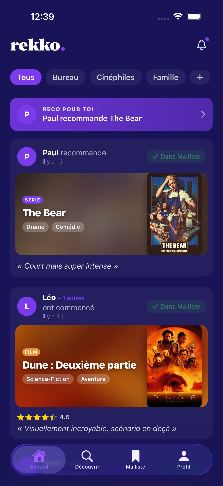
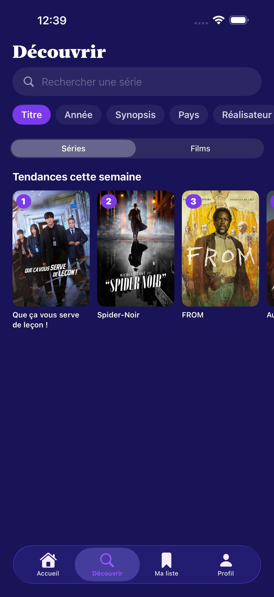
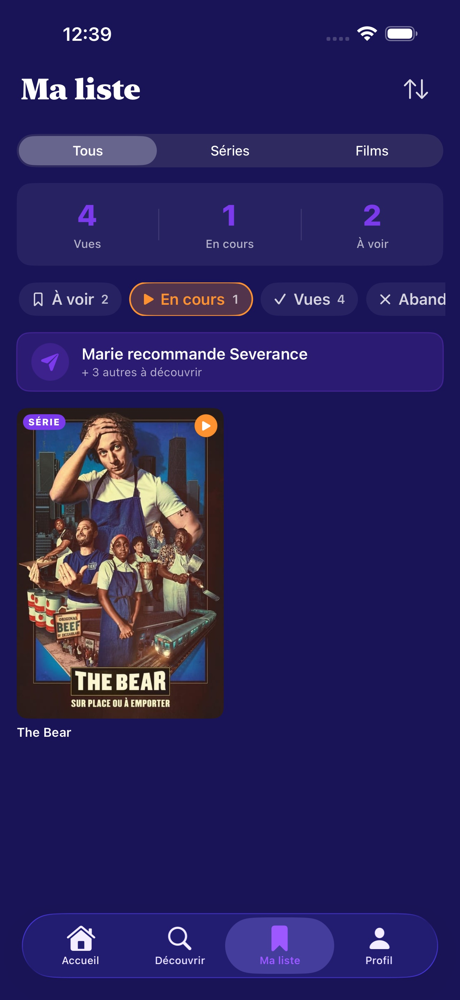
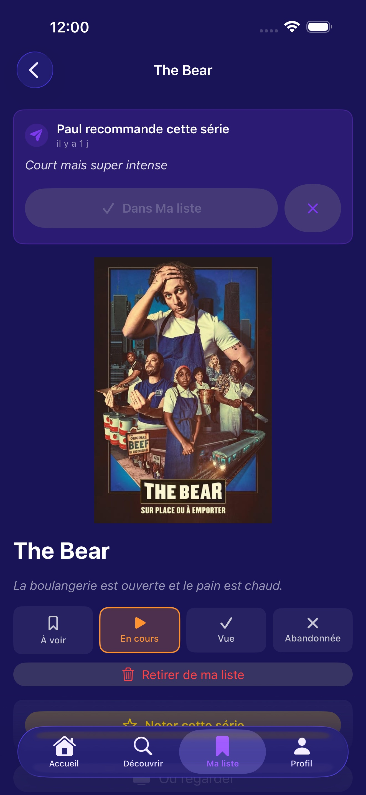
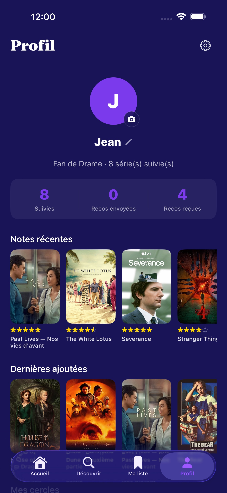
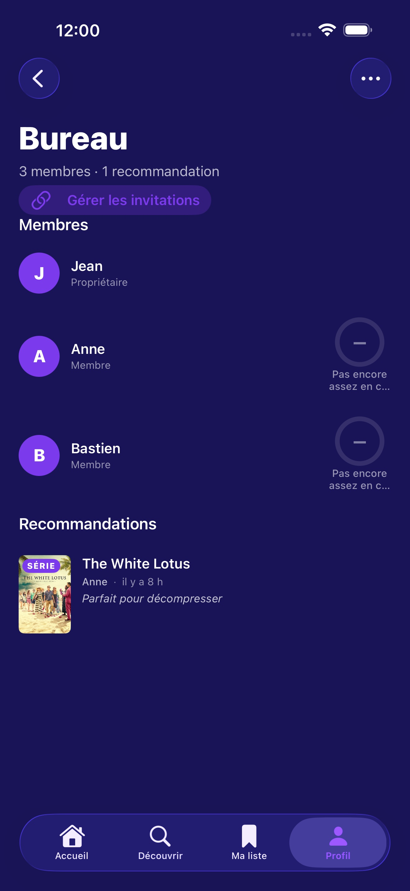

La façon privée et sans pub d'échanger des recommandations de séries et de films avec les gens avec qui vous regardez vraiment. Pas de fil public. Pas d'algorithme. Juste vos cercles.
Les apps de streaming vous recommandent ce que les autres ont regardé. Rekko vous montre ce que vos gens ont regardé — et ce qu'ils en ont pensé.
Créez un cercle pour la famille, un pour les cinéphiles, un pour les collègues. Envoyez une série avec un mot personnel (« Court mais super intense »). Ils la voient dans leur accueil, l'ajoutent à leur liste, et la boucle est bouclée — comme on le ferait à table.

Chaque reco, note et changement de statut de vos cercles, les plus récents en premier. Filtrez par cercle pour que les discussions du bureau ne noient pas les idées de la soirée en famille, et touchez une carte pour atterrir sur la fiche.

Les tendances séries et films de la semaine côté TMDB, à côté d'une rangée « Le plus noté dans ton cercle » — les titres que vos amis re-notent encore et encore. Recherche par titre, année, synopsis, pays ou réalisateur.

Un journal en quatre statuts de tout ce que vous suivez. Notez ce que vous avez vu, vite, de 0 à 5 étoiles avec une ligne d'avis. Triez par date d'ajout, par titre ou par note. Votre liste vous appartient.

Chaque fiche assemble le synopsis TMDB, les recos et notes de votre cercle, et un bouton « Où regarder » qui passe le relais à Apple TV — Apple résout le streamer pour vous, sans installer une app par plateforme.

Un seul écran pour votre avatar et votre nom, un compteur de ce que vous avez vu / en cours / à voir, et tous les cercles dont vous êtes membre. Les réglages sont à un tap : exportez vos données (RGPD), supprimez votre compte, gérez le cache d'images.

Un cercle, c'est un partage CloudKit — les invités sont contrôlés par iCloud, les données vivent dans votre compte iCloud, et il n'y a rien à héberger. Voyez les membres d'un coup d'œil, les scores de compatibilité fondés sur les notes partagées, et tout le flux d'activité du groupe.
Rekko a été pensé autour de l'idée que ce que vous regardez ne regarde que votre cercle. Aucun serveur que nous opérons ne stocke vos séries, vos notes ni vos recos.